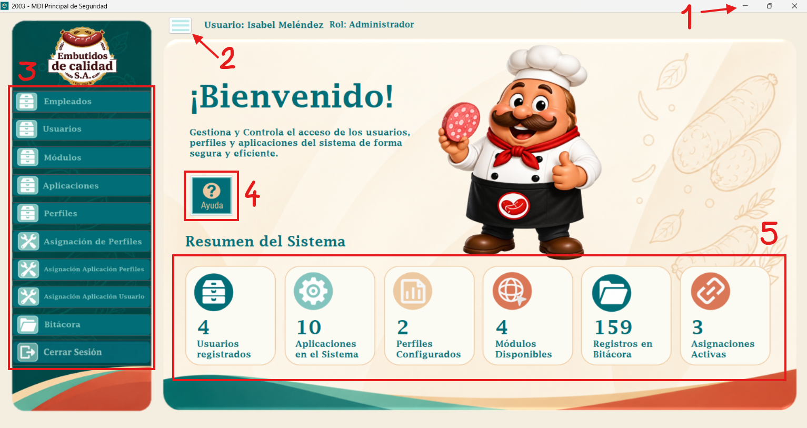
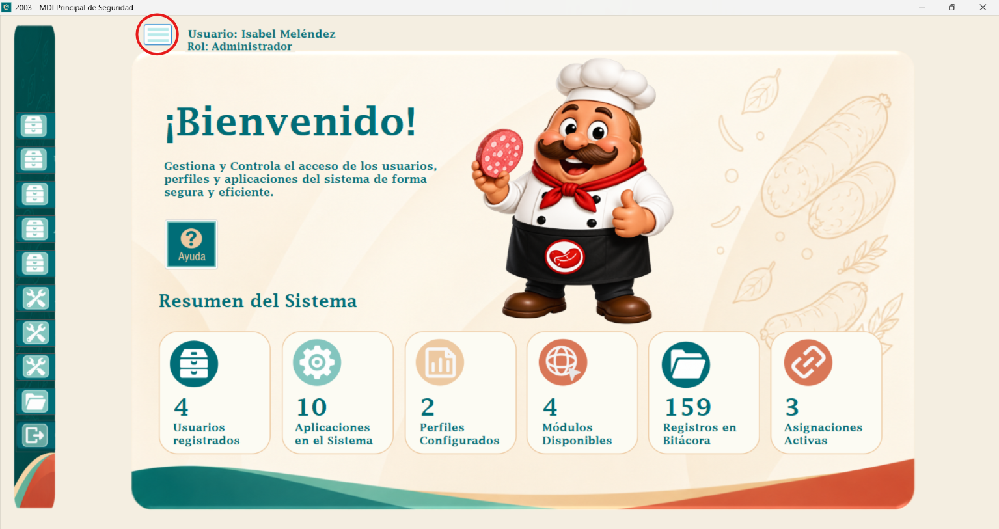
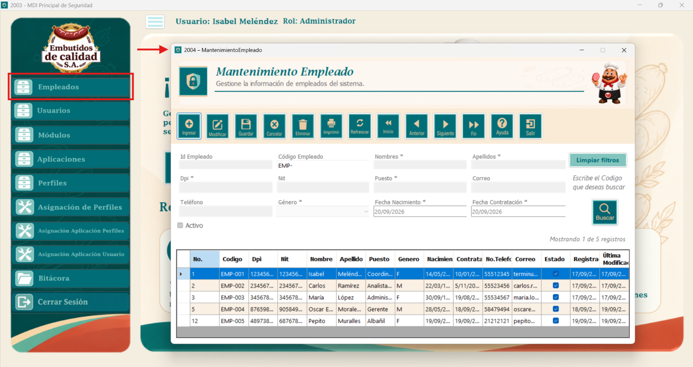

Este es el MDI enfocado en seguridad del sistema; en el podemos ver diversos botones, KPIs y elementos representativos de la empresa, en breves analizaremos cada uno de estos puntos.

1. Botones de barra de la barra de titulo; mediante estos botones podremos minimizar la ventana, agrandar la ventana en pantalla completa (recomendada para la mejor experiencia del usuario) y para cerrar sesión del sistema.
2. Botón tipo hamburguesa; con este botón podremos minimizar la sección de botones y priorizar la vista del MDI, de igual manera al precionarlo de nuevo podremos volver a la vista normal de la ventana.

3. Botones de Mantenimientos y Transaccionales; los botones que contengan la imagen de un organizador, se tratan de "Mantenimientos", los que contengan una imagen de herramientas, se trata de "Transaccionales", el que contiene una imagen de carpeta, se trata de la "Bitácora" y el último que contiene una imagen de salir, se tratan de "Cerrar Sesión". Al precionar un botón se despliega una ventana, ya sea de un mantenimiento o transacción que hayan elegido, la bitacora o del login para volver a inicial sesión.

4. Botón de ayudas; se trata del botón que preciono para poder ver la ayuda de la venta del MDI. :)
5. KPIs; el MDI cuenta con un dashboard que se actualiza mediante KPIs que muestran la información más relevante del sistema de seguridad, como por ejemplo el número total de usuarios, registros totales en la bitácora, módulos disponibles, etc.